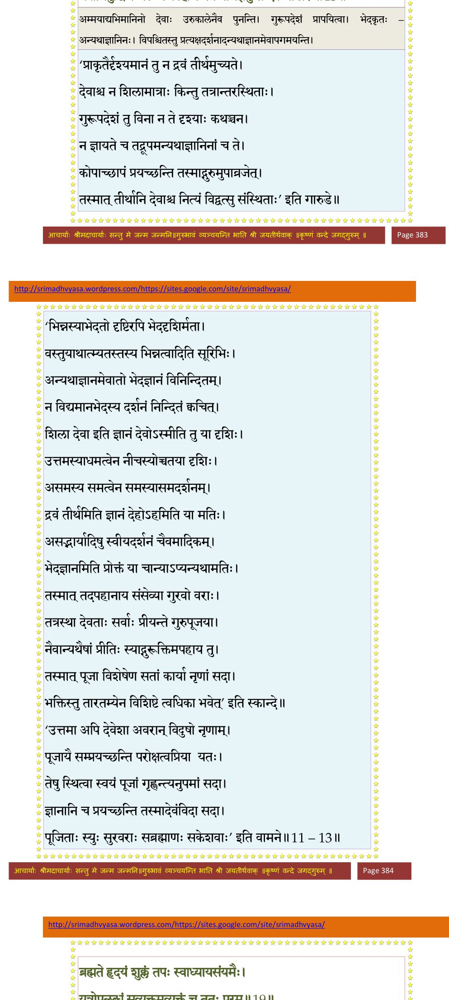
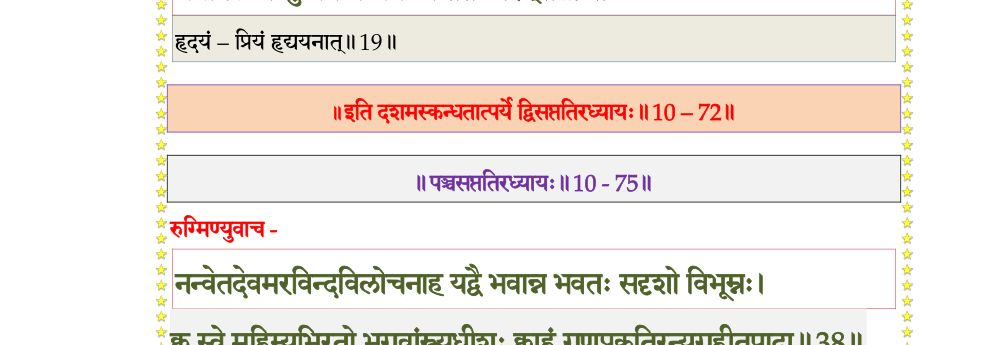

स्कन्ध 10 · अध्याय 72
श्लोक १
श्रीशुक उवाच–
श्रुत्वा पृथा सुबलपुत्र्यथ याज्ञसेनी
माधव्य इत्थमनु याः परमप्रतीताः ।
कृष्णेऽखिलात्मनि हरौ प्रणयानुबन्धं
सर्वा विसिस्म्युरलमश्रुकलाकुलाक्ष्यः ।। १ ।।
श्रुत्वा पृथा सुबलपुत्र्यथ याज्ञसेनी
माधव्य इत्थमनु याः परमप्रतीताः ।
कृष्णेऽखिलात्मनि हरौ प्रणयानुबन्धं
सर्वा विसिस्म्युरलमश्रुकलाकुलाक्ष्यः ।। १ ।।
श्लोक २
इति सम्भाष्यमाणासु स्त्रीभिः स्त्रीषु नृभिर्नृषु ।
आययुर्मुनयस्तत्र कृष्णरामदिदृक्षया ।। २ ।।
आययुर्मुनयस्तत्र कृष्णरामदिदृक्षया ।। २ ।।
श्लोक ३
द्वैपायनो नारदश्च च्यवनो देवलोऽसितः ।
विश्वामित्रः शतानन्दो भरद्वाजोऽथ गौतमः ।। ३ ।।
विश्वामित्रः शतानन्दो भरद्वाजोऽथ गौतमः ।। ३ ।।
श्लोक ४
रामः सशिष्यो भगवान् वसिष्ठो गालवो भृगुः ।
पुलस्त्यः काश्यपोऽत्रिश्च मार्कण्डेयो बृहस्पतिः।। ४ ।।
पुलस्त्यः काश्यपोऽत्रिश्च मार्कण्डेयो बृहस्पतिः।। ४ ।।
श्लोक ५
द्वितस्त्रितश्चैकतश्च ब्रह्मपुत्रस्तथाऽङ्गिराः ।
अगस्त्यो याज्ञवल्क्यश्च वामदेवादयोऽपरे ।। ५ ।।
अगस्त्यो याज्ञवल्क्यश्च वामदेवादयोऽपरे ।। ५ ।।
श्लोक ६
तान् दृष्ट्वा सहसोत्थाय प्रागासीना नृपादयः ।
पाण्डवाः कृष्णरामोै च प्रणेमुर्लोकवन्दितान्।। ६ ।।
पाण्डवाः कृष्णरामोै च प्रणेमुर्लोकवन्दितान्।। ६ ।।
श्लोक ७
तानानर्चुर्यथा सर्वे सहरामोऽच्युतोऽर्चयत् ।
स्वागतासनपाद्यार्ध्यमाल्यधूपानुलेपनैः ।। ७ ।।
स्वागतासनपाद्यार्ध्यमाल्यधूपानुलेपनैः ।। ७ ।।
श्लोक ८
उवाच सुखमासीनान् भगवान् धर्मगुप्तनुः ।
सदसस्तस्य महतो यतवाचोऽनुशृण्वतः ।। ८ ।।
सदसस्तस्य महतो यतवाचोऽनुशृण्वतः ।। ८ ।।
श्लोक ९
श्रीभगवानुवाच–
अहो वयं जन्मभृतो लब्धं कार्त्स्न्येन तत्फलम् ।
देवानामपि दुष्प्राप्यं यद् योगेश्वरदर्शनम् ।। ९ ।।
अहो वयं जन्मभृतो लब्धं कार्त्स्न्येन तत्फलम् ।
देवानामपि दुष्प्राप्यं यद् योगेश्वरदर्शनम् ।। ९ ।।
श्लोक १०
किं स्वल्पतपसां नॄॄणामर्चायां देवचक्षुषाम् ।
दर्शनस्पर्शनप्रश्नप्रह्वपादार्चनादिकम् ।। १० ।।
दर्शनस्पर्शनप्रश्नप्रह्वपादार्चनादिकम् ।। १० ।।
श्लोक ११
न ह्यम्मयानि तीर्थानि न देवा मृच्छिलामयाः ।
ते पुनन्त्युरुकालेन दर्शनादेव साधवः ।। ११ ।।
ते पुनन्त्युरुकालेन दर्शनादेव साधवः ।। ११ ।।
श्लोक १२
नाग्निर्न सूर्यो न च चन्द्रतारकं न भूर्जलं खं श्वसनोऽथ वाङ्मनः ।
उपासिता भेदकृतो हरन्त्यघं विपश्चितो घ्नन्ति मुहूर्तसेवया ।। १२ ।।
उपासिता भेदकृतो हरन्त्यघं विपश्चितो घ्नन्ति मुहूर्तसेवया ।। १२ ।।
भागवततात्पर्यनिर्णय
श्लोक १३
यस्यात्मबुद्धिः कुणपे त्रिधातुकेस्वधीः कलत्रादिषु भौम इज्यधीः ।
यत्तीर्थबुद्धिश्च जले न कर्हिचित् जनेष्वभिज्ञेषु स एव गोखरः।।१३।।
यत्तीर्थबुद्धिश्च जले न कर्हिचित् जनेष्वभिज्ञेषु स एव गोखरः।।१३।।
भागवततात्पर्यनिर्णय

श्लोक १४
श्रीशुक उवाच–
निशम्येत्थं भगवतः कृष्णस्याकुण्ठमेधसः ।
वचो दुरन्वयं विप्रास्तूष्णीमासन् भ्रमद्धियः ।। १४ ।।
निशम्येत्थं भगवतः कृष्णस्याकुण्ठमेधसः ।
वचो दुरन्वयं विप्रास्तूष्णीमासन् भ्रमद्धियः ।। १४ ।।
श्लोक १५
चिरं विमृश्य मुनय ईश्वरस्येशितव्यताम् ।
जनसङ्ग्रह इत्यूचुः स्मयन्तस्तं जगद्गुरुम् ।। १५ ।।
जनसङ्ग्रह इत्यूचुः स्मयन्तस्तं जगद्गुरुम् ।। १५ ।।
श्लोक १६
ऋषय उवाच–
यन्मायया तत्त्वविदुत्तमा वयं विमोहिता विश्वसृजामधीश्वर ।
यदीशितव्यायति गूढ ईहया अहो विचित्रं भगवद्विचेष्टितम्।। १६ ।।
यन्मायया तत्त्वविदुत्तमा वयं विमोहिता विश्वसृजामधीश्वर ।
यदीशितव्यायति गूढ ईहया अहो विचित्रं भगवद्विचेष्टितम्।। १६ ।।
श्लोक १७
अनीह एतद् बहुधैक आत्मना सृजत्यवत्यत्ति न बद्ध्यते यथा ।
भौमैर्हि भूमिर्बहुनामरूपिणी अहो विभूम्नश्चरितं विडम्बनम्।। १७ ।।
भौमैर्हि भूमिर्बहुनामरूपिणी अहो विभूम्नश्चरितं विडम्बनम्।। १७ ।।
श्लोक १८
अथापि काले स्वजनाभिगुप्त्यै बिभर्षि स त्वं खलनिग्रहाय ।
स्वलीलया वेदपथं सनातनं वर्णाश्रमात्मा पुरुषः परो भवान्।।१८।।
स्वलीलया वेदपथं सनातनं वर्णाश्रमात्मा पुरुषः परो भवान्।।१८।।
श्लोक १९
ब्रह्म ते हृदयं शुक्लं तपः स्वाध्यायसंयमैः ।
यत्रोपलब्धं सुव्यक्तमव्यक्तं च ततः परम्।। १९ ।।
यत्रोपलब्धं सुव्यक्तमव्यक्तं च ततः परम्।। १९ ।।
भागवततात्पर्यनिर्णय

श्लोक २०
तस्माद् ब्रह्मकुलं ब्रह्मन् शास्त्रयोनेस्तवात्मनः ।
सभाजयसि सद्धाम तद्ब्रह्मण्यगुणो भवान्।। २० ।।
सभाजयसि सद्धाम तद्ब्रह्मण्यगुणो भवान्।। २० ।।
श्लोक २१
अद्य नो जन्मसाफल्यं विद्यायास्तपसो दृशः ।
त्वया सङ्गम्य सङ्गत्या यत् त्वं नः श्रेयसां परः।। २१ ।।
त्वया सङ्गम्य सङ्गत्या यत् त्वं नः श्रेयसां परः।। २१ ।।
श्लोक २२
नमस्तस्मै भगवते कृष्णायाकुण्ठमेधसे ।
स्वयोगमायया च्छन्नमहिम्ने परमात्मने।। २२ ।।
स्वयोगमायया च्छन्नमहिम्ने परमात्मने।। २२ ।।
श्लोक २३
न यं विदन्त्यमी भूपा एकारामाश्च वृष्णयः ।
मायाजवनिकाच्छन्नमात्मानं कालमीश्वरम्।। २३ ।।
मायाजवनिकाच्छन्नमात्मानं कालमीश्वरम्।। २३ ।।
श्लोक २५
तस्याद्य ते ददृशिमाङ्घ्रिमघौघमर्षतीर्थास्पदं हृदि धृतं सुविपक्वयोगैः ।
उत्सिक्तभक्त्युपहृताशयजीवकोशा आपुर्भवद्गतिमथानुगृहाण भक्तान्।।
श्रीशुक उवाच–
इत्यनुज्ञाप्य दाशार्हं धृतराष्ट्रं युधिष्ठिरम् ।
राजर्षिवर्यांस्तान् गन्तुं मुनयो दधिरे मनः।। २५ ।।
उत्सिक्तभक्त्युपहृताशयजीवकोशा आपुर्भवद्गतिमथानुगृहाण भक्तान्।।
श्रीशुक उवाच–
इत्यनुज्ञाप्य दाशार्हं धृतराष्ट्रं युधिष्ठिरम् ।
राजर्षिवर्यांस्तान् गन्तुं मुनयो दधिरे मनः।। २५ ।।
श्लोक २६
तद् वीक्ष्य ताननुव्रज्य वसुदेवो महायशाः ।
प्रणम्य चोपसङ्गृह्य बभाषेदं सुयन्त्रितः।। २६ ।।
प्रणम्य चोपसङ्गृह्य बभाषेदं सुयन्त्रितः।। २६ ।।
श्लोक २७
वसुदेव उवाच–
नमो वः सर्वदेवेभ्यो ऋषयः श्रोतुमर्हथ ।
कर्मणा कर्मनिर्हारो यथा स्यान्नस्तदुच्यताम्।। २७ ।।
नमो वः सर्वदेवेभ्यो ऋषयः श्रोतुमर्हथ ।
कर्मणा कर्मनिर्हारो यथा स्यान्नस्तदुच्यताम्।। २७ ।।
श्लोक २८
नारद उवाच–
नातिचित्रमिदं विप्रा वसुदेवो बुभुत्सया ।
कृष्णं मत्वाऽर्भकं यन्नः पृच्छति श्रेय आत्मनः।। २८ ।।
नातिचित्रमिदं विप्रा वसुदेवो बुभुत्सया ।
कृष्णं मत्वाऽर्भकं यन्नः पृच्छति श्रेय आत्मनः।। २८ ।।
श्लोक २९
सन्निकर्षो हि मर्त्यानामनादरणकारणम् ।
गाङ्गं हित्वा यथाऽन्योऽम्भस्तत्रत्यो याति शुद्धये।। २९ ।।
गाङ्गं हित्वा यथाऽन्योऽम्भस्तत्रत्यो याति शुद्धये।। २९ ।।
श्लोक ३०
यस्यानुभूतिः कालेन लयोत्पत्त्यादिनाऽस्य वै ।
स्वतोऽन्यस्माच्च गुणतो न कुतश्चन रिष्यति।। ३० ।।
स्वतोऽन्यस्माच्च गुणतो न कुतश्चन रिष्यति।। ३० ।।
श्लोक ३२
तं क्लेशकर्मपरिपाकगुणप्रवाहैः अव्याहतानुभवमीश्वरमद्वितीयम् ।
प्राणादिभिः स्वविषयैरुपगूढमज्ञो मेने स सूर्यमिव मेघहिमोपरागैः।।
अथोचुर्मुनयो राजन्नाभाष्यानकदुन्दुभिम् ।
सर्वेषां शृण्वतां राज्ञां तथैवाच्युतरामयोः।। ३२ ।।
प्राणादिभिः स्वविषयैरुपगूढमज्ञो मेने स सूर्यमिव मेघहिमोपरागैः।।
अथोचुर्मुनयो राजन्नाभाष्यानकदुन्दुभिम् ।
सर्वेषां शृण्वतां राज्ञां तथैवाच्युतरामयोः।। ३२ ।।
श्लोक ३३
कर्मणा कर्मनिर्हार एष साधुनिरूपितः ।
यच्छ्रद्धया यजेद् विष्णुं सर्वयज्ञेश्वरं मखैः।। ३३ ।।
यच्छ्रद्धया यजेद् विष्णुं सर्वयज्ञेश्वरं मखैः।। ३३ ।।
श्लोक ३४
चित्तस्योपशमो यो वै कविभिः शास्त्रचक्षुषा ।
दर्शितः सुगमो योगो धर्मश्चात्ममुदावहः।। ३४ ।।
दर्शितः सुगमो योगो धर्मश्चात्ममुदावहः।। ३४ ।।
श्लोक ३५
अयं स्वस्त्ययनः पन्था द्विजातेर्गृहमेधिनः ।
यच्छ्रद्धयाऽऽप्तवित्तेन शुक्लेनेज्येत पूरुषः।। ३५ ।।
यच्छ्रद्धयाऽऽप्तवित्तेन शुक्लेनेज्येत पूरुषः।। ३५ ।।
श्लोक ३६
वित्तैषणां यज्ञदानैर्गृहैर्दारसुतैषणाम् ।
आत्मलोकैषणामेवं कालेन विसृजेद् बुधः ।
ग्रामे त्यक्तैषणाः सर्वे ययुर्धीरास्तपोवनम्।। ३६ ।।
आत्मलोकैषणामेवं कालेन विसृजेद् बुधः ।
ग्रामे त्यक्तैषणाः सर्वे ययुर्धीरास्तपोवनम्।। ३६ ।।
श्लोक ३७
ऋणैस्त्रिभिर्द्विजो जातो देवर्षिपितृणां प्रभो ।
यज्ञाध्ययनपुत्रैस्ताननिस्तीर्य त्यजन् पतेत्।। ३७ ।।
यज्ञाध्ययनपुत्रैस्ताननिस्तीर्य त्यजन् पतेत्।। ३७ ।।
श्लोक ३८
ब्रह्मचर्यसुताभ्यां वै ऋषिपित्रोर्महामते ।
यज्ञैर्देवर्णमुन्मुच्य निर्ऋणोऽशरणो भवेत्।। ३८ ।।
यज्ञैर्देवर्णमुन्मुच्य निर्ऋणोऽशरणो भवेत्।। ३८ ।।
श्लोक ३९
वसुदेव भवान् नूनं भक्त्या परमया हरिम् ।
जगतामीश्वरं भेजे स यद् वां पुत्रतां गतः।। ३९ ।।
जगतामीश्वरं भेजे स यद् वां पुत्रतां गतः।। ३९ ।।
।। इति श्रीमद्भागवते दशमस्कन्ध उत्तरार्धे द्विसप्ततितमोऽध्यायः ।।